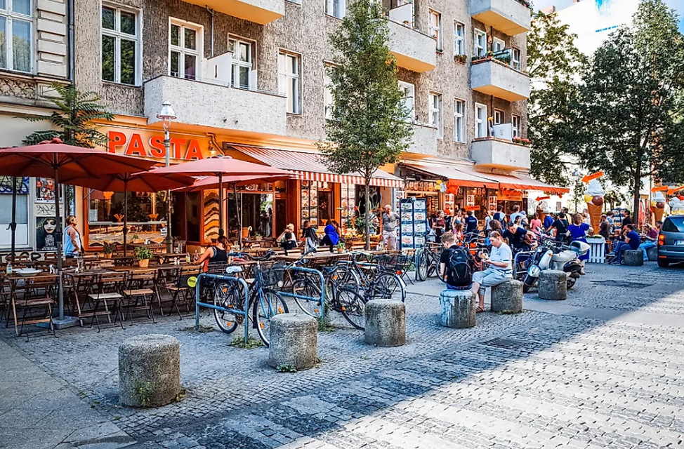

PLACE I WANT TO VISIT IN GERMANY

Berlin, the capital of Germany, is the most visited city in the country. Berlin is associated with a rich history and culture that attracts tourists from across the globe. 138 museums and over 400 art galleries are present in the city. Nearly one-third of the area of Berlin is covered by parks, gardens, and forests. Tourism has steadily risen in the city. The city recorded 31.1 million overnight stays in 2016. Some of the most visited places here include the Potsdamer Platz, the Berlin wall, Museumsinsel, Französischer Dom, etc. A large number of foreign visitors also visit the city for attending international conferences, academic events, and business meetings. According to a report, in 2015 Berlin hosted 195 international meetings.